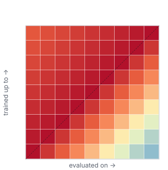

Drift HappensAn Empirical Study of Neural Architecture Robustness to Temporal Distribution Shift
* equal contribution
Standard held-out evaluation hides temporal distribution shift. We train each model on cumulative history, evaluate it across every time period, and compare architecture families on Yearbook, Amazon Reviews, and arXiv.
Real-world data distributions evolve over time, inducing temporal distribution shift that can substantially degrade the reliability of deployed machine learning systems. The extent to which architectural choices and their associated inductive biases affect temporal robustness remains insufficiently understood.
We present a systematic empirical comparison of temporal robustness across three heterogeneous, time-indexed domains (image classification, multi-label text classification, and text regression) using a unified evaluation framework based on temporal drift matrices: models are trained on cumulative historical data and evaluated on both earlier and later time periods, quantifying cross-temporal generalization across model families ranging from multilayer perceptrons and convolutional networks to recurrent networks and pretrained Transformer-based encoders.
Machine learning models are typically trained under the assumption that training and test data are drawn from the same distribution. In practice this rarely holds: real-world data evolves over time, exhibiting temporal distribution shift that standard held-out evaluation fails to capture. A model that achieves high accuracy on held-out data from the same time period may fail when deployed on future inputs.
Less understood is how architectural choices influence a model's robustness to temporal drift.
Do different inductive biases (the translation invariance of convolutions, the sequential modeling of recurrent nets, the attention of Transformers) lead to different rates of temporal degradation? Do frozen, pretrained encoders resist temporal drift better than models trained end to end?
We investigate these questions across three domains: Yearbook (image classification), Amazon Reviews (text regression), and arXiv (multi-label text classification), under one framework based on temporal drift matrices.
We divide each dataset's timeline into \(K\) disjoint intervals \(T_1, \dots, T_K\). For training cutoff \(i\), a model \(f_i\) is fit on the cumulative history \(\mathcal{D}_{\le i} = \bigcup_{j \le i} \mathcal{D}_j\), all data observed up to interval \(i\), reflecting realistic deployment where models are periodically retrained on all available history. The temporal drift matrix \(M \in \mathbb{R}^{K \times K}\) records \[ M_{ij} = \mathrm{perf}(f_i, \mathcal{D}_j), \] how well a model trained through period \(i\) performs on data from period \(j\).

The matrix shows how performance degrades, or improves, as the temporal gap between training and evaluation widens.
Building each matrix follows the same protocol. We split the timeline into periods, train a model on all data up to a cutoff, and evaluate it on every period, both earlier (on held-out data) and later. Each training cutoff gives one row of the matrix.
We evaluate temporal robustness across three domains: image classification on Yearbook, text regression on Amazon Reviews, and multi-label text classification on arXiv.
On every dataset we compare the same families of architectures, each chosen for a different inductive bias: multilayer perceptrons treat the input as an unordered whole, convolutional and residual networks encode locality and translation invariance, recurrent networks model word order, and Transformers rely on self-attention. We test several sizes within each family, varying depth, width, and embedding dimension, and add frozen pretrained encoders whose representations come from external pretraining rather than the historical data.
Yearbook is a collection of American high-school yearbook portraits. We use 37,921 frontal photos from to , each labelled male or female, with the two classes roughly balanced over time. Hairstyles, clothing, and accessories vary substantially across decades, producing covariate and concept drift.
a single binary label
yearly slices
Amazon Reviews is a large corpus of product reviews. We use a stratified sample of 300,000 reviews across seven categories from 2014 to 2023, each with its 1 to 5 star rating. Evolving language and rating behaviour drive covariate and concept drift.
e.g."This spray is really nice. It smells good and does the trick."
a number from 1 to 5
half-year slices
arXiv is an open repository of scientific papers. We use the title and abstract of submissions from to , labelled over 7 leaf categories. Subject prevalences shift as fields grow and decline, inducing label drift, while changing terminology induces covariate drift.
 text
text
e.g."Sparsity-certifying Graph Decompositions." We describe a new algorithm, the (k,ℓ)-pebble game with colors…
multi-label, one or more of 7 categories
yearly slices
Our contributions are threefold: